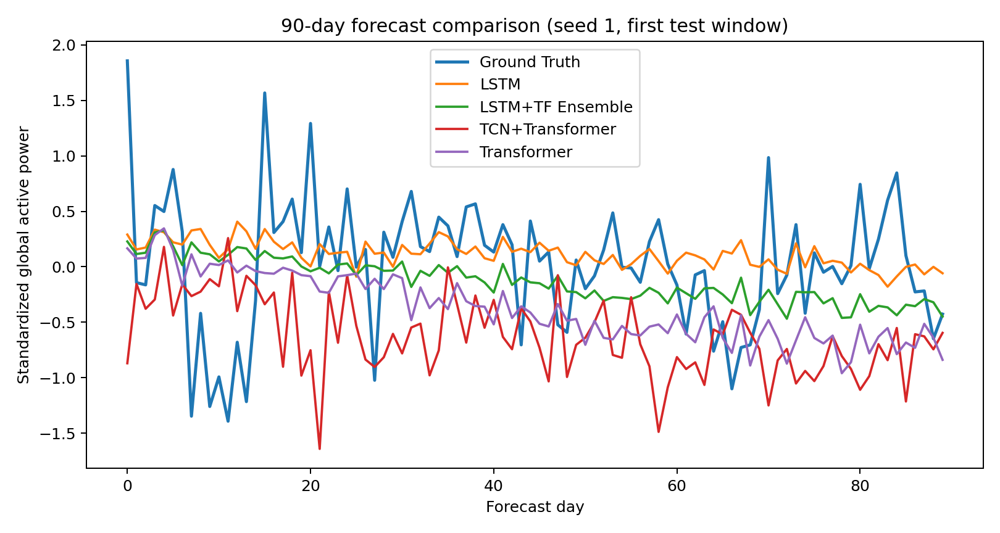
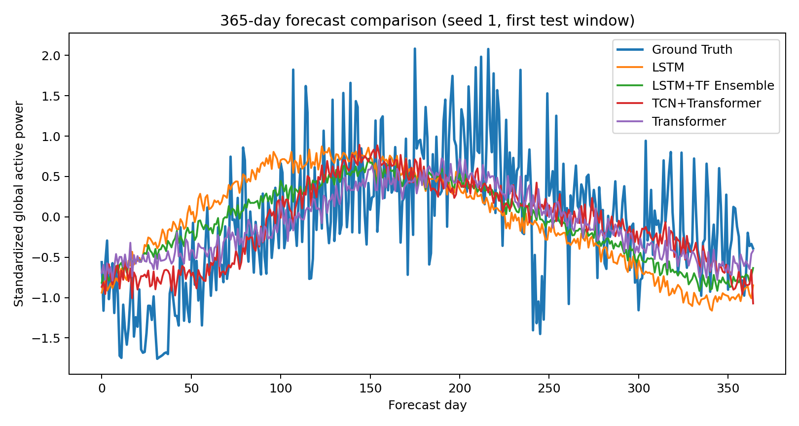

家庭电力消耗预测不是普通随机回归，而是单一住户时间序列上的多步未来估计。报告采用时间顺序切分，保留真实预测中的“只能从过去学习、在未来测试”的约束。
本项目使用 UCI 公开的 Individual household electric power consumption 数据集，页面为 https://archive.ics.uci.edu/dataset/235/individual+household+electric+power+consumption。原始数据覆盖 2006-12-16 至 2010-11-26 的分钟级家庭电力观测，共 2,075,259 条记录。清洗时按分钟时间轴补齐索引，对缺失分钟做时间插值并前后填充，再聚合为 1,442 条日级样本。
输入窗口固定为 90 天，输出窗口分别为 90 天和 365 天。90 天任务更关注近期状态与局部波动，365 天任务更考验模型是否捕捉跨季节趋势。
DESIGN CHOICES
LSTM
递归状态天然偏向连续时间记忆，适合小规模日级数据上的短期演化；长期 horizon 中，未来信息被压缩进最后隐藏状态，表达能力可能受限。
Transformer
自注意力直接比较输入窗口内任意两天，长期趋势更灵活；但样本较少时，也更容易学习到不稳定的全局相关。
TCN+TF
卷积模块原本用于先抽取局部波动再交给注意力建模全局关系；正式五轮结果不优，说明额外结构在当前数据和训练预算下没有稳定收益。
最终改进模型不是盲目堆叠复杂度，而是把两类互补归纳偏置做风险分散。LSTM 在 90 天上更稳，Transformer 在 365 天上更强；如果两个模型误差不是完全同向，平均预测可以降低方差和局部偏差。
ensemble 权重固定为 0.5/0.5，不在测试集上调参。脚本加载同一 seed 下已训练的 LSTM 和 Transformer 权重，重新评估 train/val/test 三个 split。
| Model | Horizon | Test MSE mean±std | Test MAE mean±std | n |
|---|---|---|---|---|
| LSTM | 90 | 0.461748±0.025748 | 0.528486±0.016241 | 5 |
| LSTM+TF Ensemble | 90 | 0.374844±0.021490 | 0.476894±0.012026 | 5 |
| TCN+Transformer | 90 | 0.512452±0.028040 | 0.579678±0.016588 | 5 |
| Transformer | 90 | 0.471832±0.023400 | 0.554246±0.021258 | 5 |
| LSTM | 365 | 0.499038±0.096153 | 0.550961±0.058222 | 5 |
| LSTM+TF Ensemble | 365 | 0.444566±0.034877 | 0.516384±0.022741 | 5 |
| TCN+Transformer | 365 | 0.655113±0.071301 | 0.638373±0.036456 | 5 |
| Transformer | 365 | 0.463998±0.036387 | 0.526030±0.023207 | 5 |
90 天预测中，ensemble 相对 LSTM 的 MSE 约下降 18.82%，MAE 约下降 9.76%。365 天预测中，ensemble 相对 Transformer 的 MSE 约下降 4.19%，MAE 约下降 1.83%。
NAIVE BASELINE
last_value 将最后一天目标值重复到未来；input_mean 将输入窗口均值重复到未来。二者都明显弱于 LSTM+Transformer Ensemble。
| Model | Horizon | Test MSE | Test MAE |
|---|---|---|---|
| input_mean | 90 | 0.736495 | 0.711796 |
| last_value | 90 | 0.923572 | 0.757890 |
| input_mean | 365 | 1.036502 | 0.817853 |
| last_value | 365 | 1.431294 | 0.960546 |
为了检验固定 0.5/0.5 权重是否只是偶然选择，本项目在 {0.0, 0.1, ..., 1.0} 上扫描 LSTM 权重。权重只能由验证集 MSE 选择；test-oracle 只作为诊断，不参与模型选择。
| Horizon | Rule | Test MSE mean±std | Test MAE mean±std | Selected weights |
|---|---|---|---|---|
| 90 | equal 0.5 | 0.374842±0.021491 | 0.476893±0.012027 | 0.5, 0.5, 0.5, 0.5, 0.5 |
| 90 | validation-selected | 0.446209±0.043318 | 0.518641±0.027420 | 0.7, 1.0, 1.0, 1.0, 1.0 |
| 90 | test-oracle diagnostic | 0.374186±0.021537 | 0.475724±0.011638 | 0.5, 0.5, 0.6, 0.6, 0.5 |
| 365 | equal 0.5 | 0.444563±0.034875 | 0.516382±0.022740 | 0.5, 0.5, 0.5, 0.5, 0.5 |
| 365 | validation-selected | 0.442416±0.017311 | 0.513660±0.010671 | 0.1, 0.2, 0.4, 0.3, 0.3 |
| 365 | test-oracle diagnostic | 0.429071±0.012882 | 0.504761±0.008479 | 0.4, 0.4, 0.7, 0.6, 0.0 |
READING THE FAILURE
90 天任务中，验证集选权重偏向 LSTM-heavy，但测试集明显变差。这说明验证集和测试集在短期窗口上存在分布差异，不能把 validation tuning 自动等同于更稳健模型。
FINAL DECISION
365 天 validation-selected 略优，但综合两个 horizon，固定 0.5/0.5 更不激进、更可解释，并且避免按某一个窗口过度适配。

图 1. Seed 1 的第一个 90 天测试窗口。Ensemble 曲线比单模型更平衡，整体误差最低，但局部峰谷仍有偏差。

图 2. Seed 1 的第一个 365 天测试窗口。长期预测更容易出现幅度收缩和趋势偏移，Ensemble 在平滑趋势与局部变化之间取得了更好的折中。
本实验支持两个有限结论。第一，在本数据集、90 天输入窗口和当前训练预算下，单模型中 LSTM 更适合 90 天短期预测，Transformer 更适合 365 天长期预测。第二，固定等权重 LSTM+Transformer Ensemble 在两个预测窗口上都取得最低 test MSE 和 MAE，因此是当前最终改进模型。
TCN+Transformer 在当前实验中是负结果，但不代表卷积结构无效。更合理的解释是：当前日级样本量、训练轮数和输出跨度不足以支持额外模块带来的优化成本。
LIMITS
NEXT STEPS
若进一步追求工程简洁性，可以尝试知识蒸馏或轻量 gating，把 ensemble 的互补性压缩到单模型中。若进一步追求科学严谨性，应增加更多随机 seed、做 train/val/test 时间边界敏感性分析，并同时报告原始尺度误差与标准化误差。
REPRODUCE
完整复现步骤见 docs/reproducibility.md。提交前运行 PYTHONPATH=src python scripts/verify_submission.py，该脚本检查 PDF 可解析性、报告必需文本、关键产物存在性，以及 lstm_transformer_ensemble 是否在 90 天和 365 天测试集 MSE/MAE 上均为第一。
工具辅助说明
本项目使用 ChatGPT/Codex 辅助进行代码实现、实验脚本整理、改进模型尝试和报告草稿生成。数据下载、清洗、训练、ensemble 评估和结果汇总均由本仓库脚本在本机环境中执行，报告表格与图像来自 results/official_summary/ 中的正式实验产物。